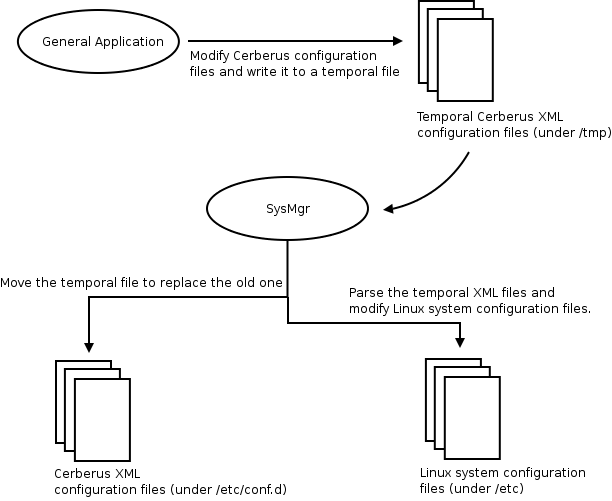

System manger ('SysMgr' in short) is used to modify the system settings. The system settings includes security, network, system log and time. SysMgr receives commands from fifo (default fifo path : /tmp/sys_mgr.fifo).
The default command format is defined :
| CMD | CMD_CODE | |
|---|---|---|
| CMD_SYS_SECURITY | 0x30 | |
| CMD_NETWORK_CONF | 0x31 | |
| CMD_SYSLOG_CONF | 0x32 | |
| CMD_SYS_REBOOT | 0x33 | |
| CMD_SET_SYSTEM | 0x34 | |
| END_OF_COMMAND | 0x24 |
Two kinds of configuration files exist in our system. One is the Linux system configuration file, the other is Kilrogg configuration file. The Kilrogg configuration files are all in XML format.
Below is the Kilrogg remote syslog XML configuration :
In general, some applications (ex. http server cgi) will modify the XML configuration files and write the configurations to a temporal file. Because these applications do not have the permission (the configuration files are located in /etc/conf.d in general) to modify the configuration files directly, therefore the new configurations should be written to a temporal file. Then SysMgr will move the temporal configuration files to replace the original one. Finally, SysMgr parses the configuration files and modify the Linux system configuration file.
